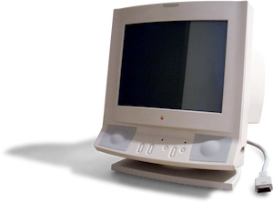
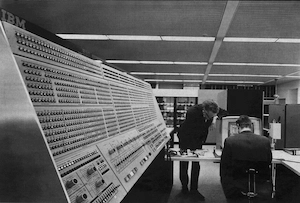

Cathode Ray Tube
Cathode rays dicovered by Juliu Plucker and Johann Wilhelm Hittorf were observed to cast shadow on the wall of the tube. Later on in 1890 Arthur Shuster found they could be deflected by eletric fields And willima Crookes saw that they also could be deflected by magnetic fields. 7 years later J. J. Thompson measured them and found that cathode rays were in fact subatomic particles or "Eletrons" which were discovered earlier in 1891 by George Johnstone Stoney. However the first to use it to display images was Ferdinand Braun who made the "Braun Tube" a cold-cathode diode. A cold-cathode was not does not rely on external heating to get emission of electrons. Later on a hot-cathode tv, a commercial product in 1922, was developed by Harry Bertrand Johnson and Harry Weiner Weinhart. While neither was better than the other overall hot-cathode ised less power but produced a lot of heat. Cold-cathode produced less heat but needed more power. These two were the norm for many years. However they were not used in monitors for the same reason a televison sets. They were used more often for data processioning and called VDU's (visual display untits) until the 1980's where they gained some video qualities and the 1990's where the term VDU fell out of use. Cathode Ray Tubes also fell out of use in the mid-2000's.
Front Panel
Before the CRT there were front panels. They displayed a certain bit of the computer and were mostly lights and switches and buttons. They were by far more direct than the later models. They would directly show what part was functioning which part wasn't and which part was not working correctly. They also allowed for direct entry of data, values and memeory. Some switches only purpose was to print. Theses machines rarely required software support and additional circuitry. Programmers who worked on them had an easy time telling what the machine was doing even from a distance down to the second. Some late on had CRT's incorperated.
